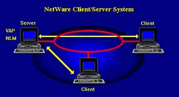

Protocolli di rete
Nelle telecomunicazioni, per protocollo di rete (o anche protocollo di comunicazione) si intende la definizione formale a priori delle modalità di interazione che, due o più apparecchiature elettroniche collegate tra loro, devono rispettare per operare particolari funzionalità di elaborazione necessarie all'espletamento di un certo servizio di rete. In termini equivalenti si tratta dunque della descrizione a livello logico del processo di comunicazione (meccanismi, regole o schema di comunicazione) tra terminali e apparati preposto al funzionamento efficace della comunicazione in rete. Queste apparecchiature possono essere host, computer clienti, telefoni intelligenti, Personal Digital Assistant (PDA), monitor, stampanti, sensori ecc.
